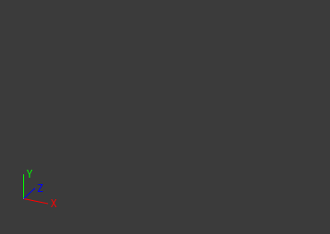

Basically, what you need to do is to take the inversed view matrix of the camera and use it to rotate small axis set which has 3 arms and X, Y, Z texts (axes rotate bacause you rotate the camera), and finally draw the axes in the corner of your window viewport.
Try to implement AddLine and AddText with anything you can to do (Debug renderer, CustomGeometry, 2D, GUI elements, etc) to draw on the screen viewport (in screen space).
void DrawScreenAxes(const Vector2& axisOrig, float axisLen)
{
if (!camera_)
return;
const Matrix3x4& viewInverse = camera_->GetView();
Vector3 axisXVec = viewInverse * Vector4(Vector3::RIGHT, 0.0f) * axisLen;
Vector3 axisYVec = viewInverse * Vector4(Vector3::UP, 0.0f) * axisLen;
Vector3 axisZVec = viewInverse * Vector4(Vector3::FORWARD, 0.0f) * axisLen;
Vector2 axisXEnd = axisOrig + Vector2(axisXVec.x_, -axisXVec.y_);
Vector2 axisYEnd = axisOrig + Vector2(axisYVec.x_, -axisYVec.y_);
Vector2 axisZEnd = axisOrig + Vector2(axisZVec.x_, -axisZVec.y_);
ImGui::GetWindowDrawList()->AddLine(ImVec2(axisOrig.x_, axisOrig.y_), axisXEnd, ImColor(255, 0, 0));
ImGui::GetWindowDrawList()->AddText(ImVec2(axisXEnd.x_ + 4.0f, axisXEnd.y_ - ImGui::GetFont()->FontSize * 0.5f), ImColor(255, 0, 0), "X");
ImGui::GetWindowDrawList()->AddLine(ImVec2(axisOrig.x_, axisOrig.y_), axisYEnd, ImColor(0, 255, 0));
ImGui::GetWindowDrawList()->AddText(ImVec2(axisYEnd.x_ + 4.0f, axisYEnd.y_ - ImGui::GetFont()->FontSize * 0.5f), ImColor(0, 255, 0), "Y");
ImGui::GetWindowDrawList()->AddLine(ImVec2(axisOrig.x_, axisOrig.y_), axisZEnd, ImColor(0, 0, 255));
ImGui::GetWindowDrawList()->AddText(ImVec2(axisZEnd.x_ + 4.0f, axisZEnd.y_ - ImGui::GetFont()->FontSize * 0.5f), ImColor(0, 0, 255), "Z");
}
This is what you get-
